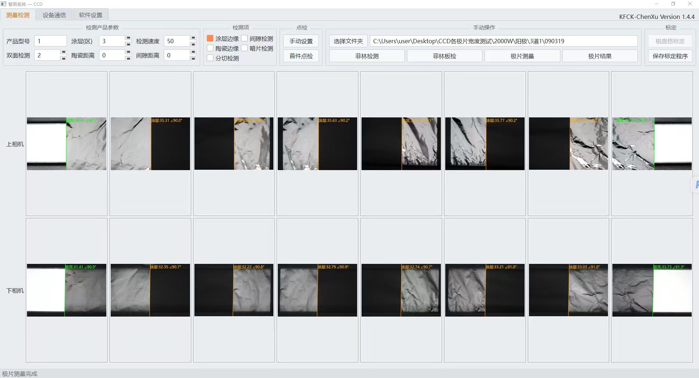

I'm a Computer Science student at NYU Tandon School of Engineering — currently a junior (Class of 2028) — placed out of Calculus I–II, Discrete Mathematics, Probability & Statistics, and Physics I through AP and NYU credit-by-exam. I work across computer vision, GPU infrastructure, and LLM agent tooling, with a foundation in competitive programming: data structures, dynamic programming, tree & graph algorithms, probability, and combinatorics in C++.
I've shipped a battery-electrode vision measurement system now running on 30+ production machines across 5 manufacturers, built usage-based GPU memory oversubscription for HAMi (open-source Kubernetes GPU virtualization), and compete as a Codeforces International Master — top 0.5% worldwide. I speak English and Mandarin natively.
Technologies
ICPC/CCPC Shandong Provincial Contest Scoreboard
9th of 294 teams · 4th of 237 official teams · 2026
50th ICPC Asia Xi'an Regional Scoreboard ▶ Vlog
38th of 418 teams · 2025
49th ICPC Asia East Continent Final Scoreboard
82nd of 280 official teams · 2024
11th CCPC Chongqing Regional Scoreboard
60th of 324 teams · 2025
Codeforces International Master
Top 0.5% Worldwide · Competitive Programming
USACO Platinum Division
USA Computing Olympiad
CSP-J National Champion
Ranked 1st nationally · China Certified Software Professional (Junior)
Hackathon Shipyard 2026 Winner
BookaCook · $20,000 Prize
Independently developed a CCD vision measurement system for battery electrode sheets — measuring segment widths and judging pass/fail in real time — now in production on 30+ machines across 5 battery manufacturers, iterated through 50+ releases driven by real production-line feedback.
Developed a coal rock detection and separation algorithm using self-trained ML models and OpenCV. Achieved 97% overall accuracy in production industrial environments.
Built a facial recognition and liveness detection system that identifies phone screen reflections, distinguishing live persons from photo/video spoofing attempts in industrial safety applications.
Designed an algorithm to auto-categorize a legacy library of 5,000+ videos, improving retrieval efficiency by 7%.
In Production on 30+ Machines Across 5 Battery Manufacturers
Industrial vision system that measures the width of every coated segment on battery electrode sheets and judges pass/fail in real time on the production line. Independently built and owned end-to-end: checkerboard camera calibration, a subpixel edge-detection pipeline (banded |Sobel-x| gradients, non-maximum suppression, per-peak RANSAC line fitting), real-time TCP communication with line-control systems, a PySide6 operator GUI, and a JSON CLI for host-machine integration. R² > 0.995 against ground truth, iterated through 50+ releases driven by real production-line feedback.

Live measurement view — upper & lower cameras reading coated-segment widths and edge angles on an electrode sheet
Open-Source Kubernetes GPU Virtualization
GPU compute oversubscription time-shares gracefully, but memory is exclusive — exceed the physical limit and CUDA hard-crashes with OOM. HAMi's memory oversubscription was driven by requested memory rather than each container's real usage, so co-locating memory-hungry jobs could crash the node. Wired the real-usage signal back into the Go scheduler so admission enforces real usage + request ≤ physical capacity, safely reclaiming idle memory — gated behind an environment flag with automatic fallback when the signal is unavailable. Validated with trace-driven simulation and real V100 cluster runs: zero crashes with utilization up from 55% to 78% (1.4×) against a best-tuned baseline, and 2× (28% → 56%) with double the admitted pods against the fixed-oversubscription production default.
MCP Servers · Agent Scaffolding · Computer-Use Agents
Built agent tooling on the Model Context Protocol: custom MCP servers exposing tools to LLM agents, driving multi-step coding workflows through agent scaffolding (Claude Code) with tool-use loops and subagent orchestration. Hands-on across the LLM serving and agent stack — API integration, KV-cache mechanics, prompt & context engineering, and computer-use agents (UI-TARS Desktop).
iOS Recipe Platform · 100+ Downloads · $20,000 Hackathon Winner
Full-stack iOS recipe platform backed by SQLite, with Python web crawlers indexing 1,200+ cookbooks and 1M+ recipes, and ISBN barcode scanning to catalog physical cookbooks. Multi-model AI pipeline: TikTok API ingestion → Groq Whisper speech-to-text → GPT-4o vision for ingredient recognition → Llama 3 for structured recipe generation, combined with hybrid collaborative-filtering recommendations.
Anti-spoofing system trained to detect phone screen reflections on faces — the subtle glare patterns that appear when someone holds a photo or video. Enables real-time distinction between live persons and spoofing attempts using custom CNN models. Open-sourced with full documentation.

Voice-Controlled Personal AI Modeled After Iron Man's J.A.R.V.I.S.
Built a comprehensive personal AI assistant with WhatsApp integration that analyzes message history and auto-replies based on your communication style. Features always-on voice wake word detection (Porcupine), calendar conflict management, and full system control — not just command execution, but judgment.

Jarvis auto-replying to WhatsApp messages based on learned communication patterns
iOS · 80+ GitHub Stars · 80+ Active Users
Civic tech iOS app that uploads video to secure cloud storage while recording — not after. Even if the phone is confiscated mid-recording, everything is already preserved. Password-protected vault with end-to-end encryption. Reached 80+ active users with confirmed evidence preservation in high-stakes situations.

Transformer Architecture · Deep Learning
Built a custom large language model architecture from the ground up to understand transformer mechanics and computational constraints. Explored hardware-software optimization challenges in deep learning and investigated resource-efficient training methods.
Based in New York City. I'm always open to new opportunities, collaborations, or just a good conversation about tech.